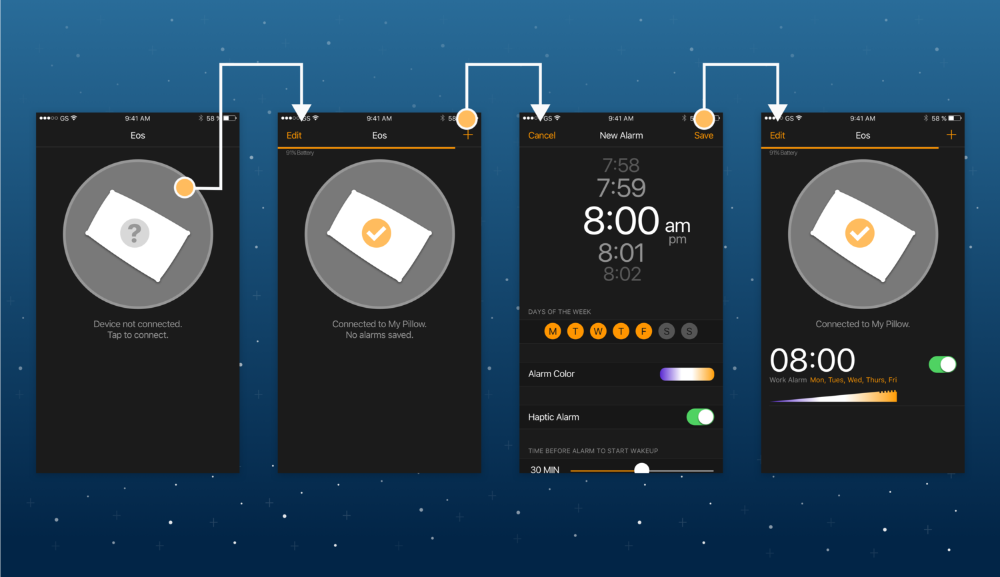
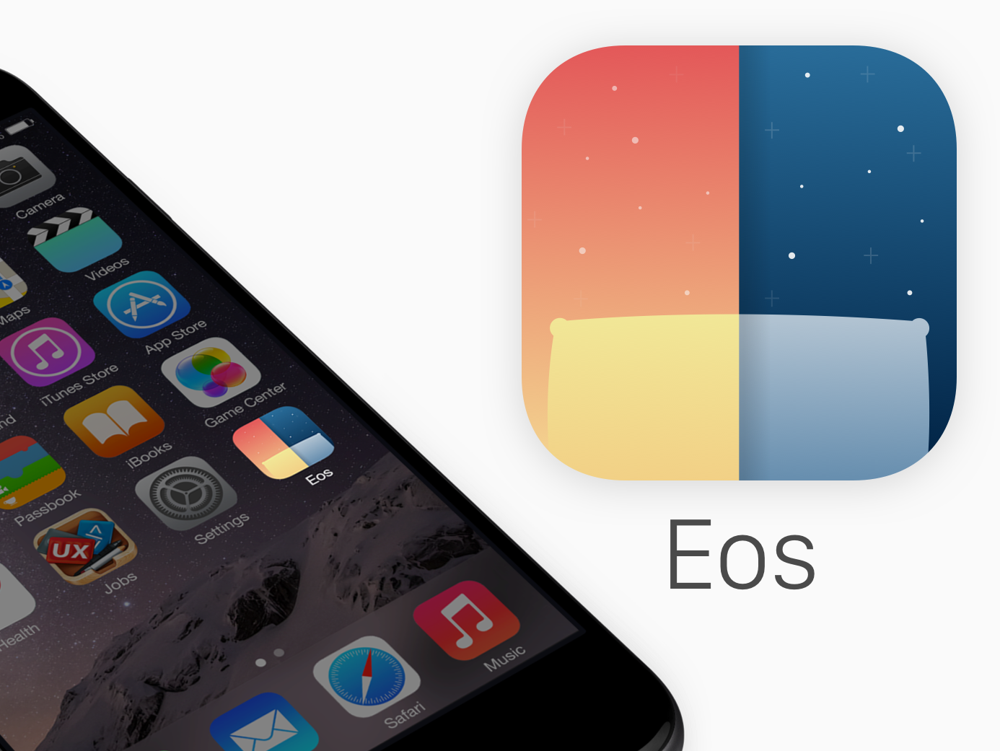

Hardware prototype, Mobile App
Eos
A smarter way to sleep and wake up with a natural light alarm smart pillow.
Role
Physical Prototyper
UX Design
Problem
Research has shown artificial dawn alarms to reduce “sleep inertia”, the period of grogginess following waking. Additionally, sleepers are relying more and more on their mobile phones for checking the time and setting alarms which can disrupt sleep for a variety of reasons. I approached the following questions:
- How do I provide the most comfortable and effective waking experience?
- How can I provide the functionality of a clock at night that reduces sleep interruptions?
Background Research
Our team reviewed sleep literature and distributed a survey to try and understand sleeping habits of respondents. The survey was created using Google Forms and our literature review was trying to understand what color lights to use in which circumstances to achieve our goals of either gently waking our users or preventing their sleep from being disrupted when checking the time in the middle of the night.
Survey results
Mid Sleep Time Check
Over half of our 23 respondents used their cell phone at night to check the time when they woke up, which can disrupt sleep with bright lights, notifications and potential anxiety.
Waking Habits
Our survey showed that of our 23 respondents, most used a sound based alarm to wake up in the morning – meaning a more abrupt, less rested waking experience.
Ideation
Pillow Sketches
The ideation process was quick revolved around objects already found in the rooms of those surveyed. I used individual sketching and group ideation techniques. Possible solutions evolved to be:
- Desk lamp
- Standing lamp
- Throw or personal pillow
- Lights behind the headboard of a bed
Mobile Application Sketches
After deciding on the pillow direction, I created a mobile interface for setting alarms for Eos. I began by sketching interface concepts. I took cues from well designed existing alarm solutions and paired this with standard usability practices to establish my app design goals:
- Feel similar to existing alarm apps
- Display connection status and battery of pillow
- Allow multiple alarms for different days of the week
- Allow setting colors the colors of the alarm lights
- Turn on and off haptic alarms
Prototype
The Pillow
The final product is a hand sewn pillow two Arduinos, a flexible baseboard with the LED arrays mounted to it. The pillow stuffing serves to diffuse the light from the LEDs. A wake cycle demo is programmed into the Arduinos which simulates an expedited alarm sequence. First, the lights uniformly change from off to a deep blue, which then fades into a bright white. This white then fades into an orange white twinkle imitating twilight at the time the user sets their alarm. If they have not been gently roused from their sleep, the vibration motors engage to provide a physical alarm along with an orange pulsing, until the user flips their pillow over to silence the alarm.
An abstract clock is on the side of the pillow is engaged by a soft potentiometer, resulting in activation by touch.
The Brain
Two Arduinos control the lights and vibration motors enclosed in a laser cut box, powered by a 6000mah USB power bank.
The Lights
The array of LEDs serve to light the pillow. Each light can be set with an RGB value, enabling fading and animating.
The Clock
Two clock modes prevent the use of a bright and distracting phone in the middle of the night to check the time.

The Pillow
The pillow cycles through various light colors and intensities before entering alarm mode which introduces vibration.
The Mobile Application
I created a mockup of the application in Sketch and animated it in Principle.
The mobile application is designed to be very similar to the iOS clock application so users feel familiar with the interface from the start. First, the pillow is connected to the app interface. Next, the alarm is set. The options available compliment the abilities of the LEDs and motors, and allow the user to select:
- The time
- Days of the week for the alarm to be active
- The alarm color(s)
- Haptic feedback
- How long the alarm will start to gently wake before the desired time
By tapping the alarm, the app previews the wake cycle.
 Evaluation and future
Evaluation was limited to casual testing of light brightness, vibration intensity and discussions of usefulness. I would be interested in implementing the following in later versions:
Hardware improvements
Redesign the brain of the system by using one single Raspberry Pi Zero or custom printed circuit board to control the lights, which would also allow the system to understand what time it was.
Remove flexible baseboard in favor of LEDs connected with conductive thread, allowing them to float freely and making the pillow far more comfortable.